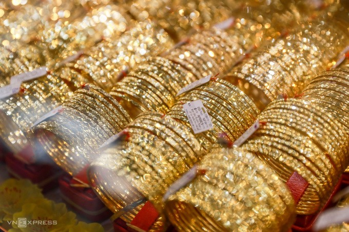

Trước việc thị trường vàng biến động mạnh, Ngân. hàng Nhà nước đề xuất thay đổi phương án sản xuất vàng miếng, bỏ Nhà nước độc quyền sản xuất loại vàng này.
Chiều tối ngày 20/3, Phó thủ tướng Lê Minh Khái họp với Ngân hàng Nhà nước, các bộ, ngành về quản lý thị trường vàng.
Nghị định 24/2012 của Chính phủ về quản lý hoạt động kinh doanh vàng đã có hơn 10 năm. Tại cuộc họp, Thượng tướng Lương Tam Quang, Thứ trưởng Công an đánh giá, việc thị trường vàng biến động, diễn biến không ổn định, chứng tỏ Nghị định này đã bộc lộ những bất cập, cần sửa đổi phù hợp thực tế.
Ngân hàng Nhà nước cũng đang nghiên cứu sửa đổi cơ chế quản lý thị trường vàng tại Nghị định 24 để phù hợp với bối cảnh mới. Ông Quang cho rằng khi sửa đổi Nghị định này, cần nghiên cứu cơ chế can thiệp thị trường, trong đó bổ sung quy định về biên độ chênh lệch. Cùng đó, ông cũng lưu ý đánh giá tổng thể vai trò dự trữ vàng hiện nay và việc quản lý khuôn sản xuất vàng miếng SJC.
Tại cuộc họp, lãnh đạo Ngân hàng Nhà nước đã báo cáo về thị trường vàng miếng và thị trường vàng trang sức, mỹ nghệ
Trước đó, giới chuyên môn từng đề cập một số cơ chế để can thiệp vào thị trường vàng như xuất vàng từ quỹ dự trữ quốc gia, dùng dự trữ ngoại hối để nhập vàng hoặc để doanh nghiệp trực tiếp nhập vàng từ nước ngoài. Các cơ chế này nhằm hạ nhiệt giá vàng khi thị trường biến động mạnh.
Tại cuộc họp, Phó thủ tướng Lê Minh Khái đánh giá thị trường ngoại tệ, thị trường vàng, các chỉ số kinh tế vĩ mô có tác động đan xen, do đó, phải có giải pháp "vừa trước mắt, vừa lâu dài".
Cuối 2023, giá trong nước chênh với thế giới tới 20 triệu đồng. Từ tháng 6/2023 đến nay, Chính phủ, lãnh đạo Chính phủ đã có 9 văn bản chỉ đạo Ngân hàng Nhà nước và các cơ quan liên quan có các biện pháp quản lý, giám sát hoạt động thị trường vàng.
Tuy nhiên, theo Phó thủ tướng, thị trường vàng thế giới và trong nước vẫn diễn biến phức tạp, giá vàng trong nước biến động mạnh, ảnh hưởng đến sự ổn định, an toàn thị trường tài chính, tiền tệ và tâm lý xã hội.
Ông đánh giá Ngân hàng Nhà nước có nhiều cố gắng nhưng việc báo cáo Chính phủ, Thủ tướng chưa kịp thời, đầy đủ để có phản ứng phù hợp, giúp bình ổn thị trường vàng. Ông yêu cầu cơ quan này theo dõi chặt chẽ diễn biến cung - cầu thị trường trong và ngoài nước, đánh giá tình hình, làm rõ nguyên nhân các biến động.
"Phải bắt đúng bệnh để có giải pháp kịp thời, hiệu quả", ông nói, thêm rằng Ngân hàng Nhà nước và các bộ ngành phải thực hiện nghiêm Công điện 23 về quản lý thị trường vàng vừa được Thủ tướng ban hành hôm nay.
Tại Công điện này, Thủ tướng tiếp tục yêu cầu Ngân hàng Nhà nước xử lý ngay tình trạng chênh lệch giữa giá vàng miếng trong nước và vàng quốc tế ở mức cao trong thời gian qua. "Không để tình trạng "vàng hóa" nền kinh tế, tác động tiêu cực đến tỷ giá, lãi suất, thị trường tiền tệ, ngoại hối và an toàn tiền tệ quốc gia", Thủ tướng giao.
Thủ tướng cũng giục Ngân hàng Nhà nước thanh tra, kiểm tra thị trường vàng, hoạt động của các doanh nghiệp kinh doanh vàng, các cửa hàng, đại lý phân phối và mua bán vàng miếng. Ông yêu cầu xử lý nghiêm các vi phạm, nhất là buôn lậu vàng qua biên giới, trục lợi, đầu cơ, thao túng, lợi dụng chính sách đẩy giá.
Cùng đó, cơ quan này phải rà soát toàn diện pháp lý, cơ chế, chính sách quản lý thị trường vàng và hoạt động kinh doanh vàng miếng, trang sức.
Ngân hàng Nhà nước được yêu cầu báo cáo Thủ tướng kết quả thực hiện các nội dung trên trong tháng 3.
Thị trường vàng hiện ổn định hơn, song giá vẫn liên tục biến động, có lúc vàng miếng vượt đỉnh lịch sử lên gần 82 triệu đồng, vàng nhẫn chạm 69 triệu đồng một lượng. Gần đây, giá vàng trong nước có xu hướng giảm do tác động từ giá vàng thế giới.